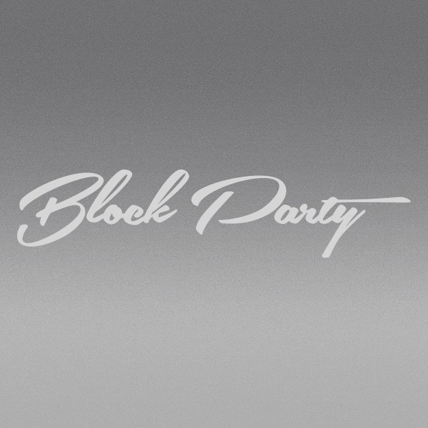

Hi, I'm Rachel Bucchino. I am a rising junior at the University of Maryland pursuing a double major in Journalism and Economics.
Thank you for visitng my site! My experience and skills are listed below.
If you have any questions or concerns, feel free to reach me at rbucchin@terpmail.umd.edu.
I am a current junior at the University of Maryland in College Park. My intended graduation year is May of 2020.
North American Hockey LeagueProduction Intern // Sept. 2018 - PresentMy responsibilities in this role include: photograph, publish and maintain the team's social media campiagns on Facebook, Instagram and Twitter. My focus is towards the Minnesota Magicians, where I support the Graphic Design, Media, Marketing and Production teams with administrative tasks. Also, I publish weekly recaps about the team's progress and issues relating to the NAHL. | |
Block Party FilmsProduction Internship // June 2018 - Sept. 2018As a production intern, I was assigned Block Party's client - SNY. With this client, I served as a Field Production Assistant on set during NBC's television series, Prospects. My deliverables in this role included coordinating talent support and managing the content calendar. |  |
The DiamondbackSports Field Reporter // Sept. 2017 - Aug. 2018During the spring semester, I covered the Big 10 Division One Gymnastics Program. My responsibilities included editing articles, keeping in mind AP Style practices, writing four articles per week, and covering meets first-hand. |
Writing: Writing has always been a passion of mine. Ever since I joined the student newspaper in high school, I knew that I would be in a profession that incorporated writing into its daily routine.
Photography: I bought a used camera when I was 12. Taking pictures and filming multimedia projects has always been an interest of mine.
Painting: This skill lets me express my ideas in ways that pictures and words can't. This element allows me to bring creativity and uniqueness to the table.
Reporting: As a journalism major, I have learned the cutting edge best practices of reporting. I have confidence in my ability to tell a story truthfully and journalistically.
Copy Editing: This is a skill that has taught me patience and diligency. Through editing, I incorporate clarity and AP Style best practices.
Social Media: I have mastered all forms of social media including Twitter, Facebook, Instagram, Snapchat and Pinterest by adhering to specific content calendars.